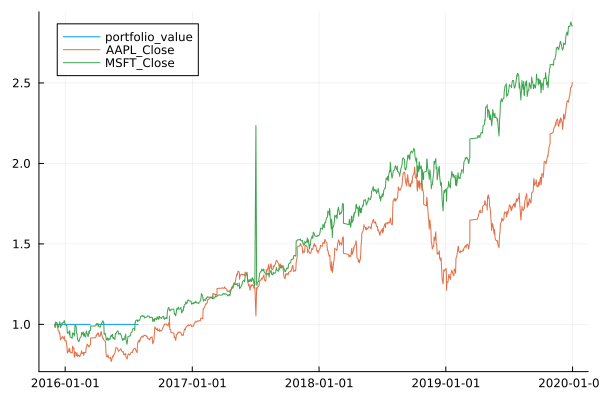

Trading
Welcome to Trading.jl, a powerful event-driven algorithmic trading and backtesting package written in Julia.
It provides an easy-to-use framework for defining and executing trading strategies based on technical indicators, as well as backtesting these strategies on historical data.
It builds on the ease of use, extensibility, inherent performance and elegance of the ECS (Entity-Component-System) paradigm, implemented through Overseer.jl, and keeps interoperability with the Julia ecosystem by interfacing with TimeSeries.jl.
Features
- Highly customizable and extensible by being based on ECS
- Backtesting and Realtime trading treated on completely equal footing
- Several built in indicators such as
SMA,EMA,MovingStdDev,RSIandBollinger - Interaction with brokers such as Alpaca
- High performance, with backtesting on 100k data points within seconds
Illustrative Example
To define a trading strategy, all you need to do is implement a Julia struct that subtypes System with an update function that defines the trading logic. The update function is called periodically by the framework and has access to tick data for the assets that the strategy was created for, as well as any technical indicators requested by the strategy. The package includes several built-in technical indicators such as simple moving averages, relative strength index, and exponential moving averages. Users can also define their own custom indicators.
struct MyStrategy <: System end
Overseer.requested_components(::MyStrategy) = (Open, Close, SMA{20, Close}, SMA{200, Close})
function Overseer.update(s::MyStrategy, trader, asset_ledgers)
for ledger in asset_ledgers
for e in new_entities(ledger, s)
#Trading logic goes here
end
end
endTo execute a trading strategy in real-time, users can create a Trader object with the desired strategies, and connect it to a real-time data source through the different broker APIs:
broker = AlpacaBroker("<key_id>", "<secret>")
strategy = Strategy(:my_strategy, [MyStrategy()], assets=[Stock("AAPL")])
trader = Trader(broker, strategies=[strategy])
start(trader)If you want to backtest a trading strategy on historical data, you can use BackTester instead of Trader with the desired data range, interval, and strategies. The BackTester will simulate the behavior of a realtime Trader on the specified data. Afterward, a TimeArray can be created with the data from the trader, and used for performance analysis.
trader = BackTester(HistoricalBroker(broker),
strategies=[strategy],
start = <start date>,
stop = <stop date>,
dt = <data timeframe>)
start(trader)
ta = TimeArray(trader)For example, the slow fast tutorial eventually leads to 
Future Roadmap
- Improved performance analysis, statistics
- Implement standard plotting functionality
Traderloading and saving- Implement further signals and Indicators
- Backtest comparisons
- Support for different Brokers